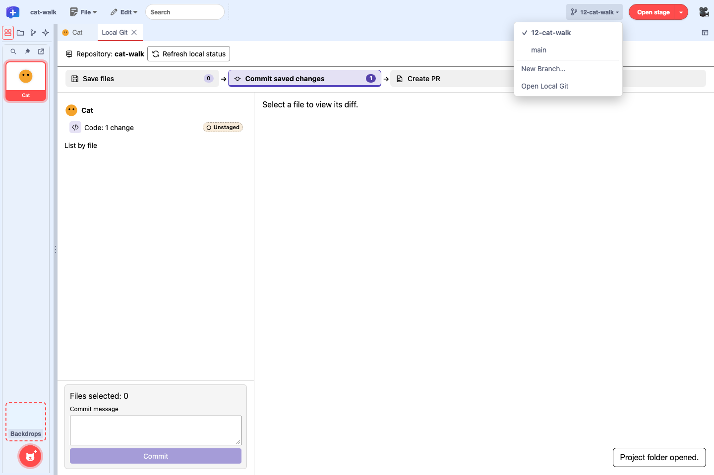
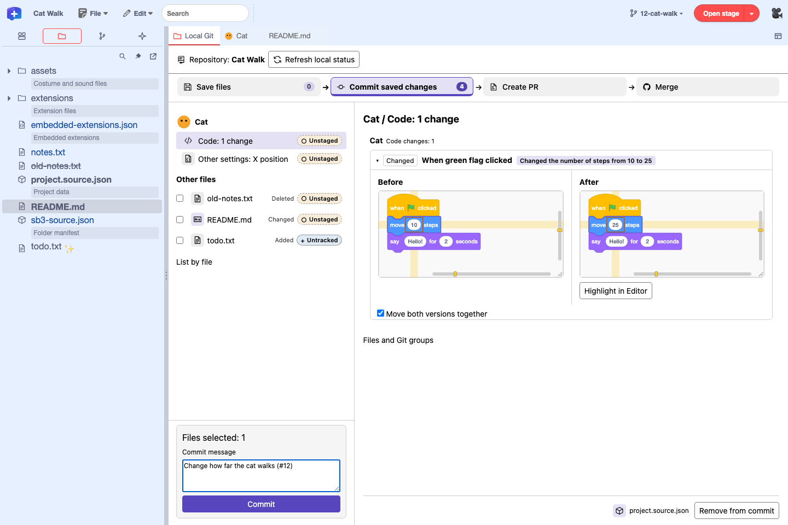
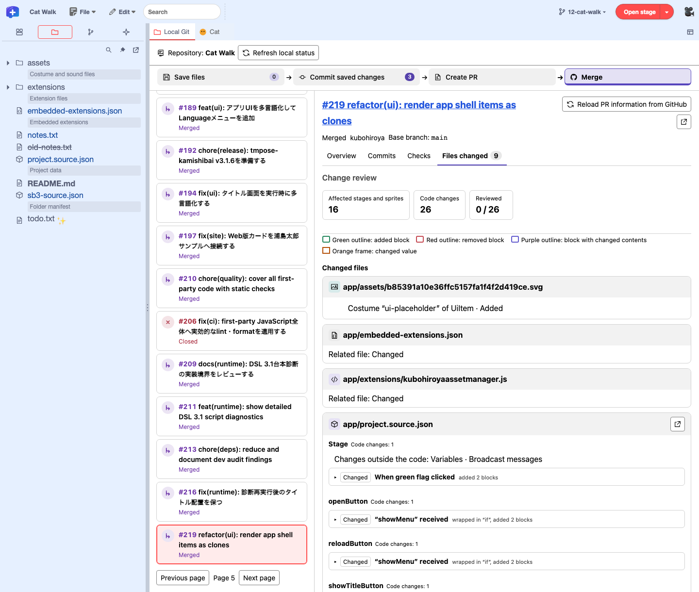
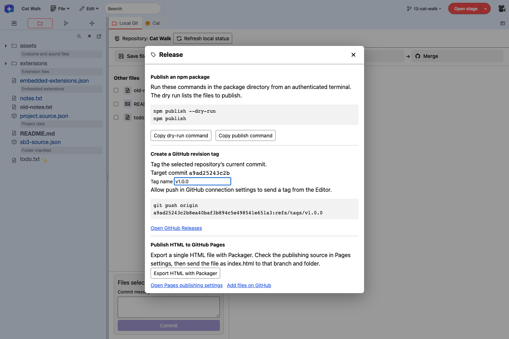

Feature guide 12/12 · Updated November 14, 2026
Develop projects on GitHub
Manage a project folder on GitHub, and move edits, commits, and reviews forward with issues and working branches. Check project diffs and commit in the editor, and create pull requests on GitHub or in an editor with a GitHub connection (a web build with a connection target set up, or a supported Desktop app).
The figures show the full screen of the public editor (GitHub Pages), in English mode, and of GitHub as of November 14, 2026. Screens that need a GitHub connection were captured earlier with a simulated connection for testing, in the Japanese UI. Select an image to open it at full size.
12.1 Put your project on GitHub
This guide assumes one project per repository. In a repository created with Project Starter, the project is in project/, and the README and the check and release settings are outside it. Improvements to the same project are made on working branches, and the versions you distribute are managed with releases.
cat-adventure/ repository root
├── .git/
├── project/ project folder you open in the editor
├── README.md
└── .github/workflows/ checks and releases for this projectMove a Scratch project with Project Starter
You can move a project you have been making on scratch.mit.edu into a GitHub repository with turbowarp-plus-editor-project-starter. It unpacks the project into an sb3-toolchain project folder and creates a repository with GitHub Actions for checks and releases, plus forms for issues and pull requests. You need Node.js 24 or later, Git, and the GitHub CLI (gh).
The following example assumes cat.sb3 is in your working folder. --lang en makes the README and the forms English; without it, they are in Japanese.
npx @kubohiroya/turbowarp-plus-editor-project-starter@0.1.0 init ./cat.sb3 --dir cat-adventure --lang eninit creates the repository locally and, if Git author information is set, makes the first commit. If author information is not set, set the author in the repository and run git -C cat-adventure commit -m "Import cat". For a Scratch project you have shared, you can pass the project page URL instead of the SB3 path.
You can open the generated cat-adventure/project with "File" → "Open Project Folder…" in the editor. When you are ready to put it on GitHub, authenticate with gh auth login and then run publish. By default it creates a private repository and pushes main.
npx @kubohiroya/turbowarp-plus-editor-project-starter@0.1.0 publish cat-adventure| Location | Contents |
|---|---|
project/ | The project folder. Open, edit, and save it in the editor |
.github/workflows/check.yml | Checks the project and builds an SB3 to try on pushes to main, pull requests, and manual runs ("Check project") |
.github/workflows/release.yml | When you publish a release, attaches the SB3 and its SHA-256 to that release |
.github/workflows/scratch-import.yml | Brings the latest version you shared again on Scratch in as a pull request ("Import from Scratch"). For a project imported from a Scratch share URL, the original Scratch project ID can be used |
.github/ISSUE_TEMPLATE/ and others | Issue forms for "Bug" and "Idea or improvement", and a checklist for pull requests |
If you keep editing on Scratch during the move, and for what to do with the project page on Scratch, see the migration steps.
turbowarp-plus-editor-project-starter · sb3-toolchain project folders
12.2 The development flow and where each step happens
Move each change forward with one issue, one branch, and one pull request. Keep the main branch playable at all times, and do the work on branches.
| Step | The editor | GitHub website and other tools |
|---|---|---|
| Issue | — | "Issues" on GitHub |
| Branch | Create and switch with the branch button in the menu bar, or with "Create PR" in Local Git | "Create a branch" on the issue, GitHub Desktop, git switch -c |
| Edit and save | Write to the project folder with "File" → "Save Project" | — |
| Commit | Select what to commit in "Commit saved changes", enter a message, and commit | GitHub Desktop, git commit |
| Push and pull | In an editor with a GitHub connection, authenticate with "Connect to GitHub…" in Local Git and use the buttons in "Sync with GitHub" | GitHub Desktop, git push and git pull |
| Pull request | Compare block by block in "Merge". Depending on the connection and permissions, you can also create PRs, run the compared version, and send reviews | "Pull requests" on GitHub, gh pr |
| Release | "File" → "Releases…" copies npm commands, creates tags, and sends HTML for Pages (sending tags and HTML needs a connection with "Allow sending to GitHub (push)" checked) | "Releases" on GitHub, gh release create |
To read and write project folders in the browser, you need Chrome or Edge with File System Access support. You can check the connection and permissions each task needs in the table. Tasks and connections
12.3 Write tasks as issues
- Open the repository on GitHub and click "Issues" → "New issue".
- Choose "Idea or improvement" or "Bug" and fill in the form. Under "How we know it is done", write checks that show the work is complete as checkboxes.
- Click "Create" to get a number such as
#12. If you work on it yourself, add yourself under "Assignees".
Each issue should describe a change small enough to finish in one pull request. Split a large goal into several issues.
12.4 Create a working branch
Before you create a branch, bring your local main up to date with GitHub (pull in 12.7). Then create a branch in the editor.
- Choose "File" → "Choose Repository…" and select the repository folder. If the project is not open yet, open
project/with "Open Project" at the top of Local Git. - Stop the project, save all edits, and commit the changes you need. You cannot switch branches while there are unsaved edits or uncommitted changes.
- Open "Create PR" in Local Git, and in "New branch name" under "Local branches", enter a name that shows the issue number and what it is about (for example
12-cat-walk). Check "Switch to it" and click "Create Branch". You can also create one with "New Branch…" from the branch button in the menu bar.

To branch off from an earlier commit, choose "⋯" → "Create branch here…" on the commit in "Git history".
If you created the branch with "Development" → "Create a branch" on a GitHub issue, fetch locally and then click "Create and Switch" in the "Branches on GitHub (origin)" list. If you created it with "New branch" in GitHub Desktop or with git switch -c 12-cat-walk, click "Refresh local status" in Local Git. If needed, reopen the same folder with "File" → "Open Project Folder…".
12.5 Edit and save the project
Edit blocks, variables and lists, sprites, costumes, sounds, and so on, then choose "File" → "Save Project". project.source.json in the project folder is updated, and assets/ and sb3-source.json are updated as needed. Before saving, the editor checks that the folder has not been changed outside the editor.
While you are updating the project in the same repository, use "Save Project". If you make an SB3 with "Save As…", the link to the project folder is lost. You can check the Git status of saved files in the "Project folder" panel.
12.6 Review changes and commit locally
Saving writes your edits to the project folder, and committing adds the changes of the selected files to your local Git history. To send them to GitHub, use push.
- Open "Save files". Select an unsaved file name to see its diff against the latest commit (HEAD) on the right. Click "Save unsaved files" to write your edits to the project folder.
- Switch to "Commit saved changes" next to it. Click a file name to see its diff on the right. For project code, select "Code" under a sprite or the stage to compare the before and after blocks.
- Check the files to commit under "Other files" or in "List by file". You can also open the diff of a sprite or the stage and select it with "Include in commit" at the lower right. Check the number of selected files in the commit box at the lower left, enter what changed in "Commit message" (for example
Change how far the cat walks (#12)), and click "Commit". - Select the commit you made in "Git history" at the top left to open "Create PR" and check the changes it contains.

Set the commit author
For the commit author, the project repository's user.name and user.email take priority. In builds where Desktop passes Git's global author settings to the editor, those settings are used when the repository has no author information.
If the author is shown as not set, open the project repository in a terminal and set your name and email address for that repository. For a public repository, you can also use the noreply address shown in your GitHub account settings. After setting them, click "Refresh local status" and commit again.
git config --local user.name "Your Name"
git config --local user.email "you@example.com"Check changes and history with local Git · Compare project changes as blocks
12.7 Send to GitHub (push)
In an editor with a GitHub connection, you can push and pull from the editor. Choose the default connection method with the Plus logo at the left end of the menu bar → "GitHub Connection Settings…".
- Open "Connect to GitHub…" on the first line of Local Git. Confirm the target, check "Allow sending to GitHub (push)", and click "Connect to GitHub". Follow the instructions to authenticate on GitHub.
- After connecting, open "Merge" and click "Send current branch (push)" in "Sync with GitHub". The editor never force-pushes.
- To bring in changes from GitHub, use "Update remote refs (fetch)" and "Update local branch and files (pull)". Pull runs only when a fast-forward is possible; afterwards, reopen the project with "Reload Project".
Without a connection
If, as in the public editor (GitHub Pages), "Connect to GitHub…" does not appear in Local Git and "GitHub Connection Settings…" shows "No GitHub connection is configured.", push and pull in one of these ways.
- GitHub Desktop. Add the repository folder with "File" → "Add local repository", and send with "Push origin" ("Publish branch" for a new branch). To bring in changes, use "Fetch origin" → "Pull origin".
- Commands. To send a new branch for the first time, run
git push -u origin 12-cat-walk; to bring in changes, rungit pull --ff-only.
After working outside the editor, click "Refresh local status" next to the repository name. To reopen the project, choose the same folder with "File" → "Open Project Folder…". Before reopening, the editor checks for unsaved edits.
12.8 Create a pull request
If you connected to GitHub with "Allow sending to GitHub (push)" checked, choose the "Base branch" in "Create PR" in Local Git and check the commits under "Commits to include". Fill in "PR title" and "PR description", review the content with "Prepare PR", and then click "Create PR". The editor applies the selected commits to the base branch and sends a branch for the PR to GitHub. If a selected commit depends on another commit and cannot be applied, select the commits it needs as well. Without a connection, "This GitHub connection does not support creating PRs." is shown, so create the PR on GitHub.

Create a PR on GitHub
Send the working branch to GitHub, then create the PR on GitHub. Steps to send to GitHub
- When you open the repository on GitHub, "Compare & pull request" appears for the branch you sent. Click it and check that it reads "base: main ← compare: 12-cat-walk".
- Following the form, write what you changed, the sprites and stage you changed, and how to check it. To close the issue when the PR is merged into the default branch, write
Closes #12in the description. To only link it, write#12. - Click "Create pull request". From the command line, you can create it with
gh pr create --fill.
Check the results and the SB3
When you create a pull request in a repository that has the Project Starter workflows, the "Check project" action checks the project folder and builds an SB3. Download the SB3 from "Artifacts" in the pull request's "Checks" → "Check project" → "Summary", open it in TurboWarp or the editor, and check that it works as described in the checks you wrote.
12.9 Check and merge
Reviewers read the changes script by script.
Select a PR in "Merge" in Local Git and open "Files changed" to compare the before and after scripts as blocks for each stage and sprite. Mark scripts you have read with "Reviewed" at the lower right of the comparison frame.

- Public repositories. Select from "Pull requests" without a connection.
- Private repositories. After authenticating with "Connect to GitHub…" in Local Git, you can select PRs in repositories you can access. If the base branch cannot be determined and there are several candidates, you can choose the comparison branch.
A PR opened while connected can be run with "Open PR project to run", which switches to a local branch at the compared version (for PR #219, pr/219). The PR number and title in the right pane link to GitHub. How to open the diff in editor tabs or another window is explained in Review pull requests script by script.
Without a connection
You can check public PRs in "Files changed" in the editor. For private PRs, sign in to GitHub and check the diff in the PR's "Files changed". To test how it works, get the SB3 from "Check project" in "Checks" and open it from "File" in the editor.
To send a review, check the conditions for sending reviews from the editor. If your connection can allow sending reviews, use "Send Review" on the comparison screen. To send on GitHub, write comments in the PR's "Files changed" or "Conversation". Pushing fixes to the same working branch updates the PR. When the PR is updated, the editor removes the "Reviewed" marks on scripts whose content changed.

Merge in the editor
Check the CI results in the "Merge" list and select the PR. With a GitHub connection that has "Allow sending to GitHub (push)" checked, once the required checks and reviews pass, a green "Squash and merge" appears at the top right of the merge status card in "Overview". Clicking it opens a dialog to confirm the base branch and the commits. The editor merges only with squash merge. To read the PR's diff, CI, and mergeability again, click "Reload PR information from GitHub" next to the PR title.

Merge on GitHub
When the required checks such as "Check project" and the review are done, confirm the target branch and the latest diff, and merge with a method GitHub offers. "Squash and merge" combines the changes into one commit. After merging, you can delete the working branch you no longer need with "Delete branch" on the PR page.
Locally, switch to main from the branch name in the menu bar, bring in the latest with pull, and reopen the project with "Reload Project".
12.10 Release and distribute
From "File" → "Releases…", go on to one of the following depending on what you publish.
- npm package. Click "Copy dry-run command" and run
npm publish --dry-runin the package directory. After checking the files to publish, click "Copy publish command" and runnpm publishin an authenticated terminal. - GitHub revision tag. Check the "Target commit" and enter a "Tag name" (for example
v1.0.0). If you are connected to GitHub with push allowed, click "Send tag to GitHub". If push is not allowed, agit push origin …command that sends the tag is shown; run it in a terminal in the repository. - GitHub Pages. "Export HTML with Packager" generates a single HTML file. With "Open Pages publishing settings", check that the source is "Deploy from a branch", and check that branch and folder. With a connection that allows push, return to the editor, click "Load publishing branches", and choose the branch, folder (
/or/docs), and HTML. Clicking "Send HTML to GitHub" sends a commit that updates onlyindex.htmlin the chosen location. Without a connection, upload it on GitHub with "Add files on GitHub". You can check the deployment status in GitHub's Pages settings. GitHub's guide to the publishing source

Distribute the project with GitHub Releases
- In the editor, choose "Open GitHub Releases" in "File" → "Releases…" to open the list of releases on GitHub. Click "Draft a new release".
- In "Choose a tag", select the tag on the commit to publish (for example
v1.0.0). To create the tag here, enter a name, choose "Create new tag on publish", and specify the target branch. - Click "Generate release notes" to fill in the list of merged pull requests. Add notes for players.
- Click "Publish release". From the command line, you can create it with
gh release create v1.0.0 --generate-notes.
When you publish the release, the "Release" action builds an SB3 from the project folder at that tag and attaches <name>-v1.0.0.sb3 (the name is sb3Name in scratch-project.json) and SHA256SUMS.txt to the release. The attached SB3 opens in TurboWarp and Scratch. To update the project page on Scratch as well, load the SB3 in the Scratch editor and overwrite it with "Save now".
For version names, raise the last number (v1.0.1) for bug fixes only, and the middle number (v1.1.0) when there is more to play, so players can tell how big the change is.
12.11 When you hit a conflict or get stuck
A project's blocks and sprite settings are all in one project.source.json. If two branches change nearby parts of the same sprite, the pull request may show "This branch has conflicts". While a Git merge is in progress, the editor does not commit or switch branches.
- Avoid conflicts. Keep pull requests small and merge them early. When working at the same time, split up which sprites each person works on.
- Redo the change if they conflict. Create a new branch from the latest
mainand make the same change again in the editor. You can carry scripts over to the new branch's project by copying and pasting them or exporting them as .blocks3 (see 9.1). Create a new pull request and close the old one. - Fix the JSON directly. If you are used to Git, bring in
mainfrom the command line, resolve the conflicts inproject.source.json, and then check it withsb3-toolchain check project.
| Message or situation | What to do |
|---|---|
| You cannot switch branches | Stop the project, save your edits, and commit them (or undo them), then switch |
| "The repository changed outside the Editor." | Click "Refresh local status". If the project changed, reopen the same folder from the File menu |
| Pull fails (no fast-forward) | Both your local branch and GitHub have new commits. Bring them in with GitHub Desktop or commands, or use the "redo the change" approach above |
| "Check project" fails | Open the log of the failed step. If you deleted or renamed files in assets/ outside the editor, open the project in the editor and save it again |
| The commit author is not set | Set the author in the repository |